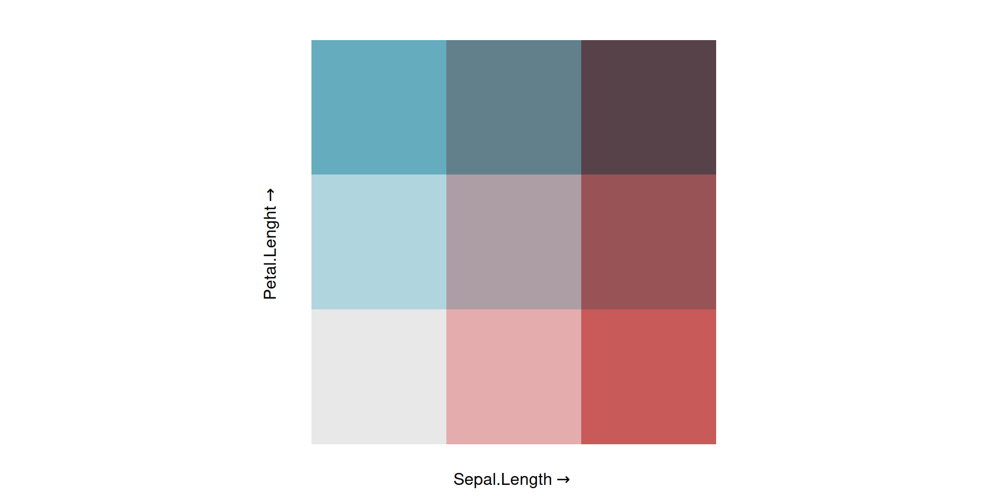
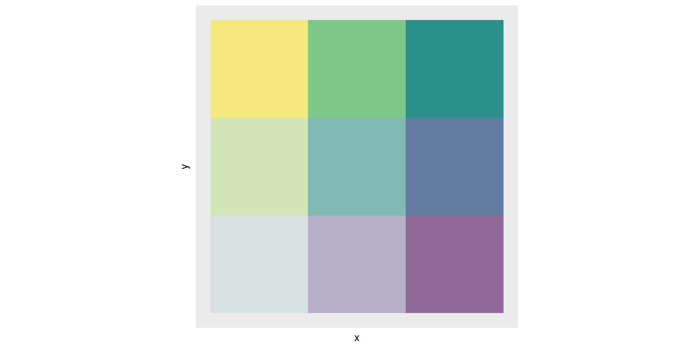
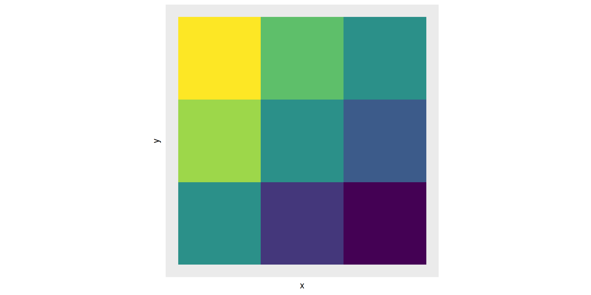
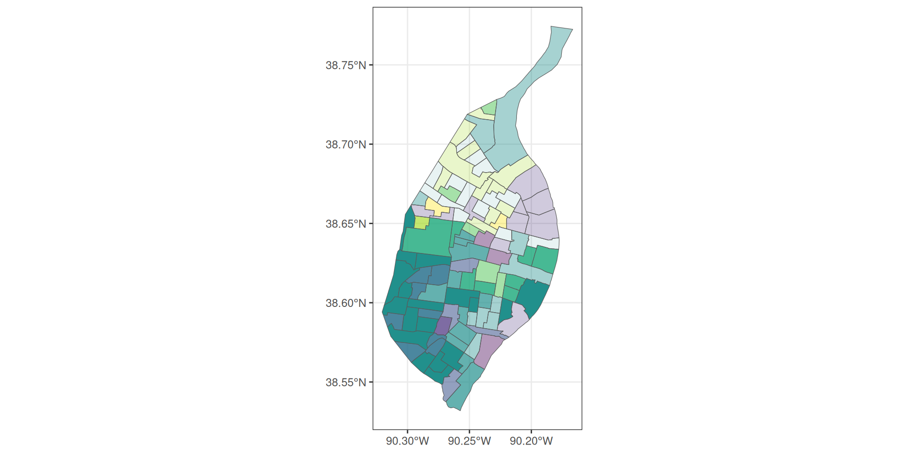
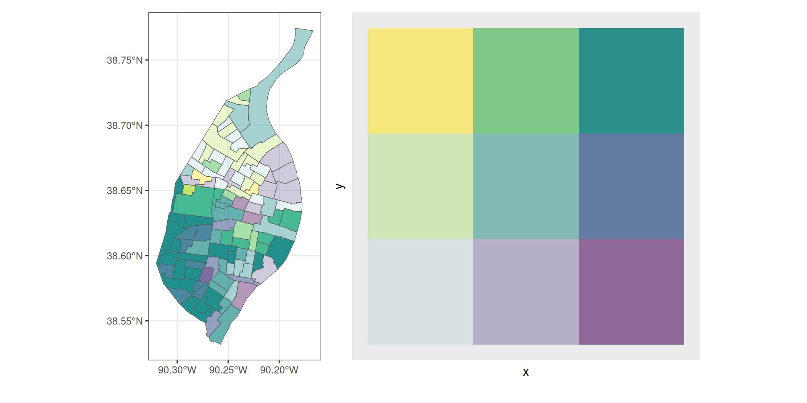

summary(iris$Sepal.Length) Min. 1st Qu. Median Mean 3rd Qu. Max.
4.300 5.100 5.800 5.843 6.400 7.900 Vamos a utilizar los siguientes paquetes:
biscaleggplot2
Mapa temático en el que las áreas se sombrean de distintos colores, frecuentemente de la misma gama cromática, que representan distintos valores de una variable estadística característica.


Sabatini et al. 2022  ## Mapas RGB
## Mapas RGB


La idea central es buscar una manera de como combinar estas dos variables
Escalas diferentes, número diferente de categorías etc…
Los mapas bivariados conllevan dos pasos:
cut() y summary() de R base pueden ser útiles (revisar también santoku)summary(iris$Sepal.Length) Min. 1st Qu. Median Mean 3rd Qu. Max.
4.300 5.100 5.800 5.843 6.400 7.900 library(janitor)
# Categorizar de acuerdo a los quantiles
ci = cut(iris$Sepal.Length,
breaks = c(4.3,5.1,5.8,6.4, max(iris$Sepal.Length)))
# Explorar los resultados
tabyl(ci) ci n percent valid_percent
(4.3,5.1] 40 0.266666667 0.2684564
(5.1,5.8] 39 0.260000000 0.2617450
(5.8,6.4] 35 0.233333333 0.2348993
(6.4,7.9] 35 0.233333333 0.2348993
<NA> 1 0.006666667 NAclassIntervals()library(classInt)
classInt::classIntervals(iris$Sepal.Length,style="quantile",n=4)style: quantile
one of 5,984 possible partitions of this variable into 4 classes
[4.3,5.1) [5.1,5.8) [5.8,6.4) [6.4,7.9]
32 41 35 42 cut()findCols()breaks = classInt::classIntervals(iris$Sepal.Length,style="quantile",n=4)$brks
cc = cut(iris$Sepal.Length, breaks = breaks)
tabyl(cc) cc n percent valid_percent
(4.3,5.1] 40 0.266666667 0.2684564
(5.1,5.8] 39 0.260000000 0.2617450
(5.8,6.4] 35 0.233333333 0.2348993
(6.4,7.9] 35 0.233333333 0.2348993
<NA> 1 0.006666667 NAfindCols()# Generar un vector que se pueda juntar a la tabla de datos originales
fc = findCols(classInt::classIntervals(iris$Sepal.Length,style="quantile",n=4))
head(fc)[1] 2 1 1 1 1 2biscalebi_class() para generar las catetoriasclassIntervals()library(biscale)
data <- bi_class(iris, x = Sepal.Length, y = Petal.Length, style = "quantile", dim = 3)
head(data$bi_class)[1] "1-1" "1-1" "1-1" "1-1" "1-1" "1-1"


bi_legend()bi_legend(pal = "GrPink",
dim = 3,
xlab = "Sepal.Length",
ylab = "Petal.Lenght",
size = 12)
pctWhite y medInc para hacer el mapa.quantiles
geom_sf y fill=bi_classbi_class debe ser la categorización que hemos visto anteriormente con bi_class()library(ggplot2)
library(sf)
data <- bi_class(stl_race_income, x = pctWhite, y = medInc, style = "quantile", dim = 3)
map <- ggplot() +
geom_sf(data = data, mapping = aes(fill = bi_class), color = "white", size = 0.1, show.legend = FALSE) +
bi_scale_fill(pal = "GrPink", dim = 3)bi_scale_fill, tiene el argumento pal para la paleta de colores y dim para el numero de categorías utilizadaslegend <- bi_legend(pal = "GrPink",
dim = 3,
xlab = "Higher % White ",
ylab = "Higher Income ",
size = 8)patchworklibrary(patchwork)
map + legendSe juede jugar con el layout final usando la función inset
p1 + inset_element(p2, 0.6, 0.6, 1, 1) # left, top, right, bottom

biscaleclassInt para categorizar los datos

expand_grid() de tidyrlibrary(tidyr)
d=expand.grid(x=1:3,y=1:3)library(ggplot2)
ggplot(d, aes(x,y))+
geom_tile(aes(alpha=x+y,fill=atan(y/x)))+
scale_fill_viridis_c()+
theme(legend.position="none",
axis.text.y = element_blank(),
axis.text.x = element_blank(),
axis.ticks = element_blank(),
panel.grid.minor = element_blank(),
panel.grid.major = element_blank())+
coord_equal()
geom_tilealpha (transparencia) y fillggplot(d, aes(x,y))+
geom_tile(aes(fill=atan(y/x)))+
scale_fill_viridis_c()+
theme(legend.position="none",
axis.text.y = element_blank(),
axis.text.x = element_blank(),
axis.ticks = element_blank(),
panel.grid.minor = element_blank(),
panel.grid.major = element_blank())+
coord_equal()
ggplot(d, aes(x,y))+
geom_tile(aes(fill=atan(y/x),alpha=x+y))+
scale_fill_viridis_c()+
theme(legend.position="none",
axis.text.y = element_blank(),
axis.text.x = element_blank(),
axis.ticks = element_blank(),
panel.grid.minor = element_blank(),
panel.grid.major = element_blank())+
coord_equal()
classInt() y findCols() x=classInt::classIntervals(stl_race_income$pctWhite,
4,style = "quantile")
y=classInt::classIntervals(stl_race_income$medInc,
4,style = "quantile")stl_race_income$x = classInt::findCols(x)
stl_race_income$y = classInt::findCols(y)
head(stl_race_income) GEOID pctWhite medInc
1 29510102300 82.925682 51650
2 29510102400 90.116046 45375
3 29510104500 74.723618 54286
4 29510106100 1.752464 18895
5 29510105500 2.376729 36130
6 29510105200 36.833277 60938
geometry
1 -90.29702, -90.29696, -90.29687, -90.29660, -90.29651, -90.29638, -90.29601, -90.29588, -90.29536, -90.29528, -90.29521, -90.29512, -90.29503, -90.29415, -90.29398, -90.29348, -90.29332, -90.29315, -90.29267, -90.29251, -90.29215, -90.29144, -90.29106, -90.29074, -90.29071, -90.29040, -90.29011, -90.28971, -90.28947, -90.28916, -90.28900, -90.28853, -90.28843, -90.28837, -90.28817, -90.28804, -90.28757, -90.28737, -90.28720, -90.28697, -90.28668, -90.28651, -90.28643, -90.28637, -90.28617, -90.28598, -90.28586, -90.28577, -90.28551, -90.28549, -90.28535, -90.28511, -90.28447, -90.28435, -90.28433, -90.28427, -90.28415, -90.28387, -90.28335, -90.28297, -90.28286, -90.28074, -90.28031, -90.27998, -90.27967, -90.27958, -90.27916, -90.27868, -90.27847, -90.27750, -90.27716, -90.27729, -90.27767, -90.27780, -90.27784, -90.27796, -90.27800, -90.27808, -90.27834, -90.27843, -90.27858, -90.27893, -90.27905, -90.27920, -90.27927, -90.27948, -90.27956, -90.27958, -90.27965, -90.27967, -90.27977, -90.28006, -90.28015, -90.28020, -90.28033, -90.28038, -90.28075, -90.28122, -90.28137, -90.28197, -90.28262, -90.28291, -90.28299, -90.28306, -90.28314, -90.28322, -90.28346, -90.28352, -90.28372, -90.28379, -90.28397, -90.28411, -90.28460, -90.28509, -90.28542, -90.28553, -90.28583, -90.28594, -90.28609, -90.28655, -90.28671, -90.28675, -90.28688, -90.28692, -90.28695, -90.28704, -90.28705, -90.28974, -90.28981, -90.29230, -90.29242, -90.29250, -90.29343, -90.29462, -90.29657, -90.29698, -90.29702, 38.56237, 38.56241, 38.56247, 38.56265, 38.56271, 38.56279, 38.56305, 38.56313, 38.56348, 38.56352, 38.56357, 38.56364, 38.56370, 38.56428, 38.56439, 38.56470, 38.56480, 38.56490, 38.56519, 38.56528, 38.56550, 38.56591, 38.56614, 38.56634, 38.56636, 38.56654, 38.56671, 38.56695, 38.56709, 38.56728, 38.56737, 38.56765, 38.56771, 38.56775, 38.56787, 38.56795, 38.56823, 38.56835, 38.56845, 38.56859, 38.56876, 38.56886, 38.56890, 38.56895, 38.56912, 38.56928, 38.56940, 38.56929, 38.56902, 38.56900, 38.56885, 38.56861, 38.56795, 38.56786, 38.56784, 38.56784, 38.56787, 38.56803, 38.56835, 38.56859, 38.56867, 38.56750, 38.56727, 38.56713, 38.56703, 38.56700, 38.56685, 38.56665, 38.56655, 38.56618, 38.56603, 38.56589, 38.56548, 38.56535, 38.56530, 38.56518, 38.56514, 38.56504, 38.56476, 38.56466, 38.56449, 38.56410, 38.56397, 38.56379, 38.56372, 38.56348, 38.56341, 38.56338, 38.56330, 38.56328, 38.56317, 38.56286, 38.56275, 38.56270, 38.56256, 38.56251, 38.56212, 38.56163, 38.56148, 38.56083, 38.56014, 38.55984, 38.55976, 38.55968, 38.55960, 38.55951, 38.55926, 38.55919, 38.55898, 38.55891, 38.55871, 38.55855, 38.55802, 38.55749, 38.55714, 38.55703, 38.55671, 38.55660, 38.55643, 38.55594, 38.55578, 38.55573, 38.55560, 38.55556, 38.55552, 38.55544, 38.55542, 38.55702, 38.55707, 38.55892, 38.55900, 38.55904, 38.55975, 38.56061, 38.56203, 38.56233, 38.56237
2 -90.28452, -90.28448, -90.28445, -90.28422, -90.28401, -90.28349, -90.28346, -90.28343, -90.28310, -90.28297, -90.28285, -90.28278, -90.28258, -90.28252, -90.28245, -90.28238, -90.28223, -90.28221, -90.28215, -90.28200, -90.28175, -90.28151, -90.28109, -90.28104, -90.28096, -90.28072, -90.28056, -90.28024, -90.28017, -90.27985, -90.27983, -90.27973, -90.27957, -90.27943, -90.27935, -90.27933, -90.27922, -90.27916, -90.27898, -90.27890, -90.27882, -90.27862, -90.27817, -90.27804, -90.27785, -90.27779, -90.27763, -90.27757, -90.27741, -90.27719, -90.27716, -90.27711, -90.27704, -90.27683, -90.27648, -90.27635, -90.27614, -90.27592, -90.27581, -90.27574, -90.27552, -90.27544, -90.27525, -90.27495, -90.27466, -90.27446, -90.27426, -90.27393, -90.27365, -90.27345, -90.27325, -90.27323, -90.27296, -90.27257, -90.27235, -90.27224, -90.27193, -90.27183, -90.27126, -90.27095, -90.27074, -90.27064, -90.27054, -90.27041, -90.27030, -90.26999, -90.26981, -90.26978, -90.26969, -90.26966, -90.26939, -90.26918, -90.26858, -90.26832, -90.26845, -90.26847, -90.26855, -90.26858, -90.26863, -90.26879, -90.26884, -90.26890, -90.26897, -90.26905, -90.26910, -90.26969, -90.27125, -90.27144, -90.27147, -90.27185, -90.27202, -90.27211, -90.27237, -90.27246, -90.27266, -90.27280, -90.27324, -90.27344, -90.27360, -90.27405, -90.27408, -90.27424, -90.27428, -90.27440, -90.27445, -90.27464, -90.27498, -90.27523, -90.27542, -90.27550, -90.27573, -90.27581, -90.27589, -90.27597, -90.27612, -90.27620, -90.27638, -90.27693, -90.27712, -90.27729, -90.27781, -90.27798, -90.27812, -90.27816, -90.27850, -90.27871, -90.27889, -90.27927, -90.27965, -90.27970, -90.28046, -90.28052, -90.28068, -90.28105, -90.28193, -90.28211, -90.28247, -90.28249, -90.28269, -90.28278, -90.28344, -90.28377, -90.28407, -90.28415, -90.28438, -90.28440, -90.28440, -90.28451, -90.28453, -90.28452, 38.57405, 38.57416, 38.57424, 38.57465, 38.57505, 38.57601, 38.57607, 38.57612, 38.57672, 38.57697, 38.57719, 38.57732, 38.57771, 38.57785, 38.57797, 38.57809, 38.57832, 38.57836, 38.57843, 38.57862, 38.57884, 38.57902, 38.57924, 38.57926, 38.57929, 38.57940, 38.57947, 38.57961, 38.57965, 38.57983, 38.57985, 38.57993, 38.58005, 38.58017, 38.58024, 38.58026, 38.58038, 38.58045, 38.58067, 38.58079, 38.58094, 38.58092, 38.58088, 38.58086, 38.58084, 38.58084, 38.58082, 38.58081, 38.58079, 38.58076, 38.58075, 38.58074, 38.58071, 38.58056, 38.58027, 38.58017, 38.58001, 38.57984, 38.57974, 38.57974, 38.57973, 38.57973, 38.57972, 38.57972, 38.57972, 38.57971, 38.57971, 38.57971, 38.57971, 38.57970, 38.57970, 38.57970, 38.57970, 38.57970, 38.57970, 38.57970, 38.57970, 38.57970, 38.57970, 38.57970, 38.57969, 38.57966, 38.57961, 38.57955, 38.57949, 38.57931, 38.57921, 38.57923, 38.57930, 38.57933, 38.57919, 38.57908, 38.57878, 38.57865, 38.57825, 38.57818, 38.57795, 38.57787, 38.57772, 38.57726, 38.57711, 38.57695, 38.57671, 38.57647, 38.57631, 38.57662, 38.57744, 38.57755, 38.57756, 38.57776, 38.57787, 38.57784, 38.57777, 38.57775, 38.57769, 38.57765, 38.57756, 38.57752, 38.57749, 38.57739, 38.57738, 38.57733, 38.57732, 38.57728, 38.57726, 38.57719, 38.57706, 38.57693, 38.57684, 38.57680, 38.57668, 38.57664, 38.57660, 38.57656, 38.57647, 38.57642, 38.57631, 38.57598, 38.57587, 38.57577, 38.57545, 38.57535, 38.57526, 38.57524, 38.57504, 38.57491, 38.57479, 38.57456, 38.57434, 38.57431, 38.57387, 38.57383, 38.57374, 38.57350, 38.57294, 38.57280, 38.57253, 38.57251, 38.57233, 38.57224, 38.57162, 38.57132, 38.57224, 38.57250, 38.57327, 38.57332, 38.57333, 38.57372, 38.57388, 38.57405
3 -90.29432, -90.29425, -90.29422, -90.29417, -90.29416, -90.29412, -90.29402, -90.29400, -90.29394, -90.29390, -90.29379, -90.29376, -90.29372, -90.29362, -90.29358, -90.29356, -90.29352, -90.29350, -90.29348, -90.29343, -90.29342, -90.29339, -90.29333, -90.29331, -90.29327, -90.29320, -90.29315, -90.29311, -90.29308, -90.29300, -90.29300, -90.29297, -90.29289, -90.29288, -90.29265, -90.29240, -90.29217, -90.29183, -90.29148, -90.29125, -90.29035, -90.28992, -90.28973, -90.28822, -90.28765, -90.28707, -90.28675, -90.28614, -90.28559, -90.28518, -90.28498, -90.28278, -90.28264, -90.28146, -90.28069, -90.27850, -90.27683, -90.27537, -90.27453, -90.27391, -90.27289, -90.27268, -90.27242, -90.27115, -90.26995, -90.26962, -90.26949, -90.26798, -90.26746, -90.26635, -90.26598, -90.26577, -90.26519, -90.26487, -90.26450, -90.26451, -90.26454, -90.26455, -90.26457, -90.26465, -90.26468, -90.26469, -90.26473, -90.26474, -90.26476, -90.26483, -90.26486, -90.26487, -90.26489, -90.26490, -90.26491, -90.26496, -90.26498, -90.26501, -90.26510, -90.26512, -90.26514, -90.26534, -90.26548, -90.26570, -90.26680, -90.26749, -90.26796, -90.26850, -90.26872, -90.26918, -90.27013, -90.27193, -90.27243, -90.27282, -90.27367, -90.27401, -90.27573, -90.27662, -90.27766, -90.27929, -90.28018, -90.28176, -90.28229, -90.28636, -90.28651, -90.28809, -90.28850, -90.28971, -90.29012, -90.29098, -90.29118, -90.29202, -90.29336, -90.29354, -90.29403, -90.29435, -90.29432, 38.62098, 38.62118, 38.62124, 38.62154, 38.62159, 38.62179, 38.62233, 38.62241, 38.62270, 38.62289, 38.62344, 38.62363, 38.62380, 38.62434, 38.62452, 38.62460, 38.62484, 38.62492, 38.62501, 38.62530, 38.62540, 38.62553, 38.62593, 38.62607, 38.62629, 38.62669, 38.62698, 38.62720, 38.62737, 38.62785, 38.62788, 38.62805, 38.62852, 38.62858, 38.62999, 38.63146, 38.63143, 38.63140, 38.63136, 38.63134, 38.63125, 38.63121, 38.63119, 38.63105, 38.63099, 38.63093, 38.63089, 38.63082, 38.63078, 38.63075, 38.63073, 38.63056, 38.63055, 38.63041, 38.63031, 38.63010, 38.62994, 38.62980, 38.62972, 38.62966, 38.62956, 38.62954, 38.62952, 38.62940, 38.62927, 38.62924, 38.62923, 38.62909, 38.62904, 38.62893, 38.62889, 38.62887, 38.62882, 38.62879, 38.62875, 38.62869, 38.62851, 38.62845, 38.62828, 38.62780, 38.62763, 38.62756, 38.62735, 38.62728, 38.62713, 38.62670, 38.62655, 38.62651, 38.62636, 38.62632, 38.62622, 38.62595, 38.62586, 38.62567, 38.62512, 38.62501, 38.62493, 38.62395, 38.62322, 38.62328, 38.62357, 38.62373, 38.62383, 38.62392, 38.62396, 38.62403, 38.62410, 38.62407, 38.62404, 38.62401, 38.62391, 38.62387, 38.62367, 38.62357, 38.62345, 38.62326, 38.62315, 38.62296, 38.62290, 38.62242, 38.62240, 38.62222, 38.62217, 38.62201, 38.62196, 38.62185, 38.62183, 38.62167, 38.62131, 38.62124, 38.62106, 38.62091, 38.62098
4 -90.29005, -90.28941, -90.28915, -90.28881, -90.28821, -90.28763, -90.28734, -90.28684, -90.28603, -90.28596, -90.28590, -90.28582, -90.28575, -90.28572, -90.28560, -90.28553, -90.28522, -90.28404, -90.28302, -90.28256, -90.28232, -90.28189, -90.28133, -90.28113, -90.28099, -90.28055, -90.28036, -90.28016, -90.27958, -90.27938, -90.27917, -90.27855, -90.27834, -90.27819, -90.27776, -90.27762, -90.27727, -90.27702, -90.27623, -90.27588, -90.27563, -90.27444, -90.27414, -90.27413, -90.27312, -90.27296, -90.27251, -90.27236, -90.27256, -90.27284, -90.27314, -90.27333, -90.27351, -90.27380, -90.27408, -90.27427, -90.27445, -90.27502, -90.27521, -90.27540, -90.27615, -90.27686, -90.27878, -90.27884, -90.27965, -90.28021, -90.28053, -90.28070, -90.28122, -90.28140, -90.28157, -90.28191, -90.28209, -90.28227, -90.28244, -90.28297, -90.28314, -90.28356, -90.28433, -90.28468, -90.28574, -90.28609, -90.28716, -90.28809, -90.28846, -90.28860, -90.28900, -90.28913, -90.28932, -90.28963, -90.28967, -90.28977, -90.28981, -90.28984, -90.28988, -90.28991, -90.28995, -90.29005, 38.67058, 38.67139, 38.67172, 38.67214, 38.67290, 38.67363, 38.67400, 38.67463, 38.67565, 38.67560, 38.67557, 38.67553, 38.67549, 38.67547, 38.67540, 38.67537, 38.67520, 38.67455, 38.67403, 38.67378, 38.67365, 38.67343, 38.67313, 38.67302, 38.67294, 38.67270, 38.67260, 38.67249, 38.67218, 38.67207, 38.67196, 38.67162, 38.67151, 38.67143, 38.67120, 38.67113, 38.67094, 38.67080, 38.67038, 38.67019, 38.67005, 38.66941, 38.66925, 38.66923, 38.66869, 38.66861, 38.66837, 38.66829, 38.66803, 38.66768, 38.66726, 38.66699, 38.66673, 38.66632, 38.66595, 38.66569, 38.66543, 38.66467, 38.66441, 38.66414, 38.66309, 38.66347, 38.66450, 38.66454, 38.66498, 38.66529, 38.66546, 38.66555, 38.66583, 38.66592, 38.66602, 38.66620, 38.66630, 38.66640, 38.66649, 38.66677, 38.66687, 38.66709, 38.66750, 38.66769, 38.66826, 38.66846, 38.66903, 38.66953, 38.66972, 38.66979, 38.67001, 38.67008, 38.67018, 38.67035, 38.67037, 38.67043, 38.67045, 38.67047, 38.67049, 38.67051, 38.67053, 38.67058
5 -90.28601, -90.28595, -90.28593, -90.28593, -90.28592, -90.28587, -90.28586, -90.28572, -90.28569, -90.28564, -90.28559, -90.28556, -90.28552, -90.28547, -90.28542, -90.28539, -90.28530, -90.28525, -90.28520, -90.28512, -90.28499, -90.28419, -90.28371, -90.28335, -90.28314, -90.28297, -90.28244, -90.28227, -90.28209, -90.28191, -90.28157, -90.28140, -90.28122, -90.28070, -90.28053, -90.28021, -90.27965, -90.27884, -90.27878, -90.27686, -90.27615, -90.27526, -90.27437, -90.27362, -90.27249, -90.27246, -90.27199, -90.27047, -90.26926, -90.26898, -90.26722, -90.26640, -90.26626, -90.26599, -90.26586, -90.26572, -90.26575, -90.26579, -90.26584, -90.26587, -90.26590, -90.26592, -90.26594, -90.26599, -90.26603, -90.26606, -90.26611, -90.26616, -90.26619, -90.26622, -90.26626, -90.26631, -90.26634, -90.26705, -90.26918, -90.26989, -90.26996, -90.27017, -90.27024, -90.27072, -90.27088, -90.27122, -90.27215, -90.27263, -90.27265, -90.27271, -90.27274, -90.27275, -90.27278, -90.27280, -90.27284, -90.27287, -90.27295, -90.27299, -90.27301, -90.27307, -90.27308, -90.27309, -90.27358, -90.27382, -90.27481, -90.27517, -90.27593, -90.27601, -90.27674, -90.27733, -90.27888, -90.27872, -90.27868, -90.27860, -90.27853, -90.27849, -90.27838, -90.27834, -90.28143, -90.28345, -90.28360, -90.28369, -90.28383, -90.28425, -90.28547, -90.28602, -90.28601, 38.65899, 38.65938, 38.65951, 38.65955, 38.65961, 38.65992, 38.66002, 38.66089, 38.66109, 38.66140, 38.66170, 38.66190, 38.66210, 38.66240, 38.66273, 38.66294, 38.66348, 38.66380, 38.66401, 38.66416, 38.66433, 38.66544, 38.66609, 38.66658, 38.66687, 38.66677, 38.66649, 38.66640, 38.66630, 38.66620, 38.66602, 38.66592, 38.66583, 38.66555, 38.66546, 38.66529, 38.66498, 38.66454, 38.66450, 38.66347, 38.66309, 38.66262, 38.66214, 38.66174, 38.66111, 38.66109, 38.66090, 38.66073, 38.66062, 38.66059, 38.66041, 38.66031, 38.66030, 38.66027, 38.66025, 38.66024, 38.66004, 38.65972, 38.65944, 38.65924, 38.65905, 38.65888, 38.65877, 38.65848, 38.65829, 38.65811, 38.65784, 38.65757, 38.65739, 38.65721, 38.65694, 38.65667, 38.65649, 38.65656, 38.65678, 38.65685, 38.65686, 38.65688, 38.65689, 38.65694, 38.65696, 38.65700, 38.65708, 38.65713, 38.65699, 38.65659, 38.65646, 38.65639, 38.65618, 38.65611, 38.65586, 38.65563, 38.65512, 38.65487, 38.65474, 38.65436, 38.65430, 38.65423, 38.65429, 38.65431, 38.65440, 38.65443, 38.65449, 38.65450, 38.65457, 38.65463, 38.65477, 38.65577, 38.65595, 38.65646, 38.65695, 38.65718, 38.65787, 38.65811, 38.65842, 38.65861, 38.65862, 38.65863, 38.65865, 38.65869, 38.65881, 38.65886, 38.65899
6 -90.29462, -90.29460, -90.29458, -90.29456, -90.29456, -90.29451, -90.29449, -90.29446, -90.29442, -90.29436, -90.29433, -90.29430, -90.29426, -90.29421, -90.29418, -90.29415, -90.29410, -90.29406, -90.29403, -90.29400, -90.29396, -90.29391, -90.29389, -90.29385, -90.29384, -90.29386, -90.29389, -90.29402, -90.29411, -90.29425, -90.29434, -90.29459, -90.29414, -90.29392, -90.29371, -90.29360, -90.29353, -90.29310, -90.29289, -90.29243, -90.29231, -90.29147, -90.29105, -90.29059, -90.29022, -90.28911, -90.28874, -90.28834, -90.28742, -90.28714, -90.28674, -90.28638, -90.28625, -90.28532, -90.28503, -90.28479, -90.28446, -90.28431, -90.28400, -90.28314, -90.28308, -90.28277, -90.28263, -90.28222, -90.28216, -90.28208, -90.28210, -90.28215, -90.28217, -90.28231, -90.28240, -90.28247, -90.28248, -90.28252, -90.28253, -90.28254, -90.28259, -90.28267, -90.28273, -90.28277, -90.28281, -90.28286, -90.28292, -90.28296, -90.28340, -90.28350, -90.28452, -90.28516, -90.28528, -90.28531, -90.28533, -90.28543, -90.28544, -90.28547, -90.28546, -90.28542, -90.28533, -90.28597, -90.29487, -90.29462, 38.64858, 38.64872, 38.64883, 38.64893, 38.64894, 38.64925, 38.64936, 38.64955, 38.64980, 38.65012, 38.65031, 38.65049, 38.65078, 38.65104, 38.65123, 38.65141, 38.65168, 38.65197, 38.65215, 38.65233, 38.65260, 38.65288, 38.65306, 38.65326, 38.65336, 38.65349, 38.65358, 38.65382, 38.65400, 38.65425, 38.65443, 38.65493, 38.65489, 38.65486, 38.65484, 38.65479, 38.65477, 38.65472, 38.65470, 38.65465, 38.65464, 38.65457, 38.65453, 38.65449, 38.65445, 38.65434, 38.65430, 38.65426, 38.65417, 38.65414, 38.65409, 38.65405, 38.65404, 38.65396, 38.65393, 38.65391, 38.65388, 38.65386, 38.65384, 38.65376, 38.65375, 38.65373, 38.65372, 38.65368, 38.65367, 38.65366, 38.65355, 38.65321, 38.65310, 38.65230, 38.65178, 38.65142, 38.65134, 38.65112, 38.65110, 38.65102, 38.65074, 38.65031, 38.64990, 38.64963, 38.64938, 38.64902, 38.64866, 38.64842, 38.64847, 38.64848, 38.64859, 38.64864, 38.64788, 38.64768, 38.64759, 38.64684, 38.64673, 38.64651, 38.64637, 38.64623, 38.64606, 38.64612, 38.64699, 38.64858
x y
1 4 4
2 4 3
3 4 4
4 1 1
5 1 3
6 2 4alpha y otro para el fillstl_race_income$alpha = as.character(stl_race_income$x + stl_race_income$y)
stl_race_income$color = as.character(atan(stl_race_income$y/stl_race_income$x))map = ggplot()+
#geom_sf(data=wrld)+
geom_sf(data = stl_race_income,aes(fill=color,alpha=alpha),shape=15, size=11,show.legend = FALSE)+
scale_fill_viridis_d()+
theme_bw()
map
leg = ggplot(d, aes(x,y))+
geom_tile(aes(fill=atan(y/x),alpha=x+y))+
scale_fill_viridis_c()+
theme(legend.position="none",
axis.text.y = element_blank(),
axis.text.x = element_blank(),
axis.ticks = element_blank(),
panel.grid.minor = element_blank(),
panel.grid.major = element_blank())+
coord_equal()
leg


biscale# Los paquetes que vamos a utilizar
library(sf)
library(ggplot2)
library(rnaturalearth)
library(tidyterra)
library(classInt)
library(biscale)wrld <- ne_countries(scale = "small",returnclass = "sf")resu = read.csv(file="dados_bivariate_maps.csv")
geo = st_as_sf(resu,coords = c(1,2))
st_crs(geo)= st_crs(wrld)biscalecat <- bi_class(geo, x = TBD, y = PBD, style = "quantile", dim = 3)leg =bi_legend(pal = "DkBlue",
dim = 3,
xlab = "Taxonomic beta",
ylab = "Phylogenetic beta",
size = 12)map =ggplot(data=wrld)+
geom_sf()+
geom_sf(data = cat, aes(color = bi_class), size = 10, shape=15,show.legend = FALSE) +
bi_scale_color(pal = "DkBlue", dim = 3)+
theme_bw()+
theme(panel.grid.major = element_blank())+
coord_sf(xlim = c(-95, -86), ylim = c(16, 25), expand = FALSE)
mapd<-expand.grid(x=1:3,y=1:3)
dleg2 =ggplot(d,aes(x,y))+
#crear el *tile* jugando con los parámetros de colores *fill* y *alpha*
geom_tile( aes(fill=atan(y/x),alpha=x+y))+
scale_fill_viridis_c()+
#Definir los temas
theme(legend.position="none",
panel.background=element_blank(),
axis.text.y = element_blank(),
axis.text.x = element_blank(),
axis.ticks = element_blank(),
axis.title.x = element_text(size=15,hjust=0.6),
axis.title.y = element_text(size=15),
panel.grid.minor = element_blank(),
panel.grid.major = element_blank(),
plot.background = element_rect(fill = "white",color="white"))+
# Definir los titulos de los ejes
labs(x="PBD",
y="TBD")+
# Decir que los tiles deben se cuadrados
coord_equal()+
# Poner flechitas
geom_segment(aes(x=1, xend = 3 , y=0, yend = 0), size=1.5,
arrow = arrow(length = unit(0.6,"cm"))) +
geom_segment(aes(x=0, xend = 0 , y=1, yend = 3), size=1.5,
arrow = arrow(length = unit(0.6,"cm")))
leg2catTBD = classInt::classIntervals(geo$TBD,3,style = "quantile")
catPBD = classInt::classIntervals(geo$PBD,3,style = "quantile")
# Juntar las columnas
geo$catTBD = classInt::findCols(catTBD)
geo$catPBD= classInt::findCols(catPBD)geo$alpha = as.character(geo$catTBD + geo$catPBD)
geo$color = as.character(atan(geo$catTBD/geo$catPBD))map2 = ggplot()+
geom_sf(data=wrld)+
geom_sf(data = geo,aes(color=color,alpha=alpha),shape=15, size=10,show.legend = FALSE)+
scale_color_viridis_d()+
theme_bw()+
theme(panel.grid.major = element_blank())+
coord_sf(xlim = c(-95, -86), ylim = c(16, 25), expand = FALSE)
map2map + leg
map2 + leg2